Published: 2022-08-24
Source link: https://www.cnphotos.net/academy/show-87.html
What is rhythm? Many people cannot say. But if you watch life closely, you will find the beauty of rhythm everywhere.
Succulents on a balcony, a spiral staircase, zebra crossings on the road, the mix of light and shadow, and the blend of points, lines, and shapes. All things in the world show their own rhythmic beauty.
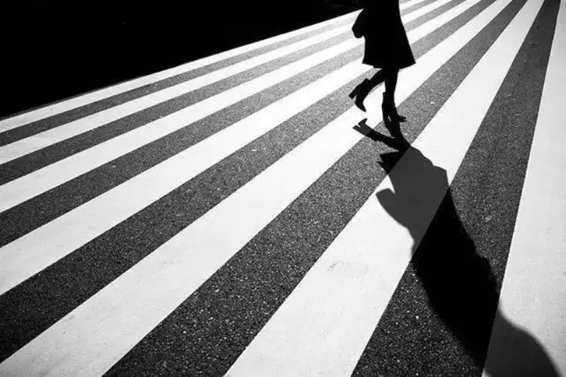
Many people confuse rhythm with repetition, and do not know how to use rhythm to add depth to a composition.
Rhythm: the same or similar visual elements repeat in the frame by a pattern. Repetition: the same or similar visual elements repeat in the frame with no pattern.
A set of pictures makes this clear:
This is repetition, with no pattern ▼
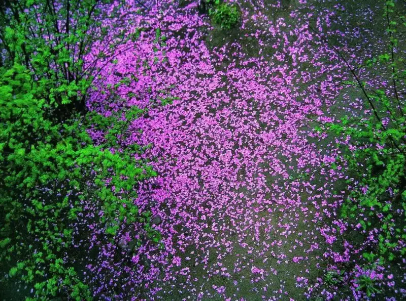
This is rhythm, with a pattern ▼
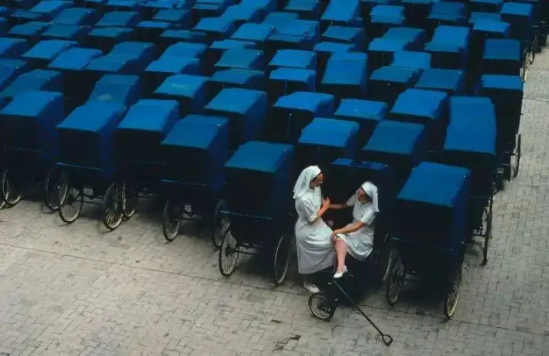
Rhythm is also called cadence. As you can see, its key traits are a shared feature and ordered repetition.
How do you turn an ordinary scene into a frame that lasts and has more depth? Watching closely to find the pattern matters.
Look at this photo ▼
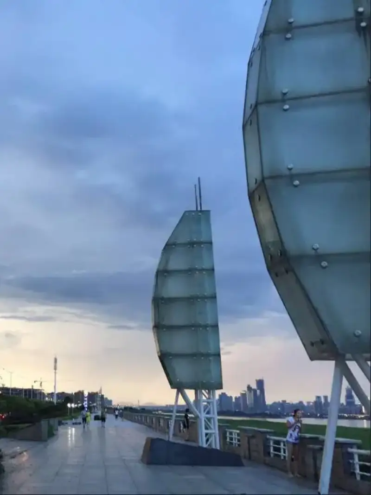
This photo has no sense of rhythm. There are not enough similar elements to form rhythm. You need at least three, and the frame has no pattern to speak of.
Now we shoot from bottom to top ▼
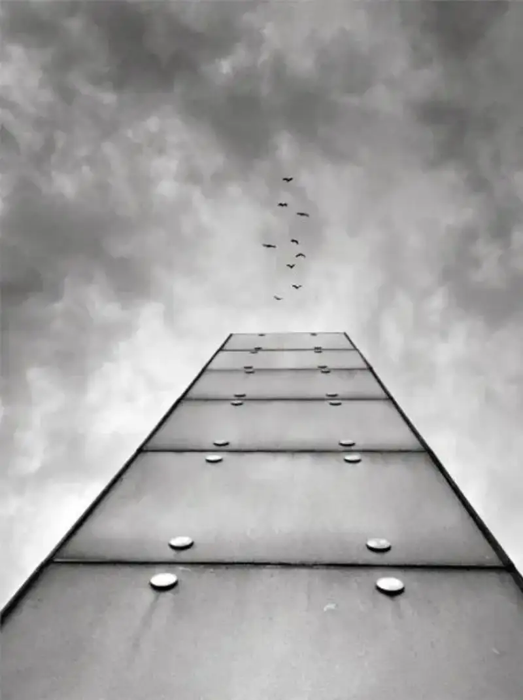
Now the rhythm in the frame is stronger. Lines, circles, and triangles share a common feature, and they are placed in a fairly ordered way. This is ordered repetition, and it finally makes a more beautiful frame.
In photography, rhythm gives an impression of long and short, fast and slow, rise and fall. It also creates a visual feel of strong and weak, light and heavy, hard and soft. So one frame may hold more than one kind of rhythm, and more forms than those below.
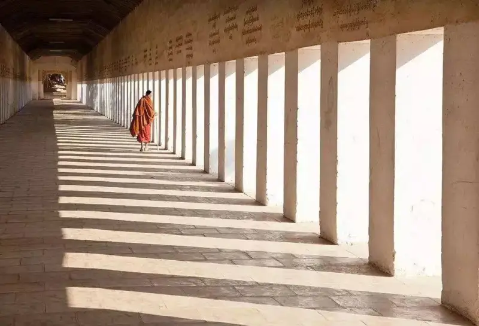
Far and near
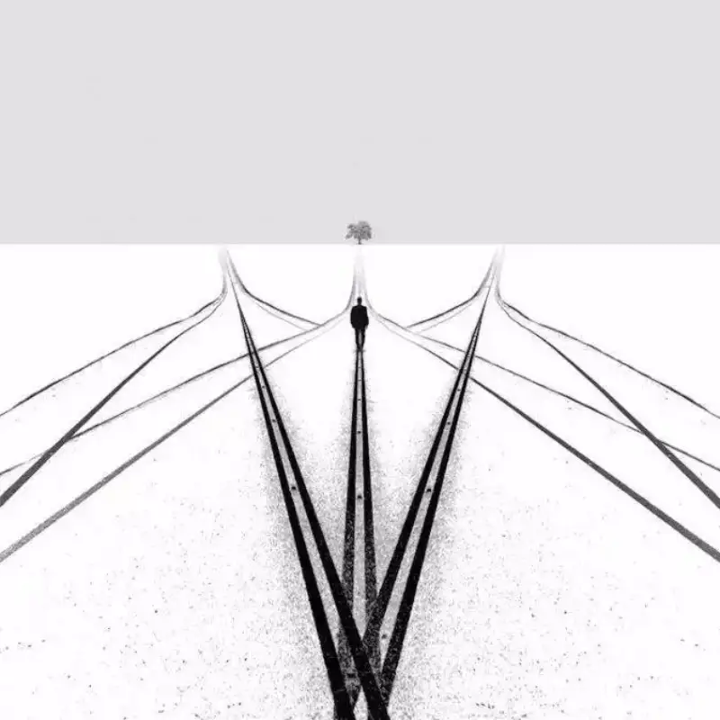
Thick and thin
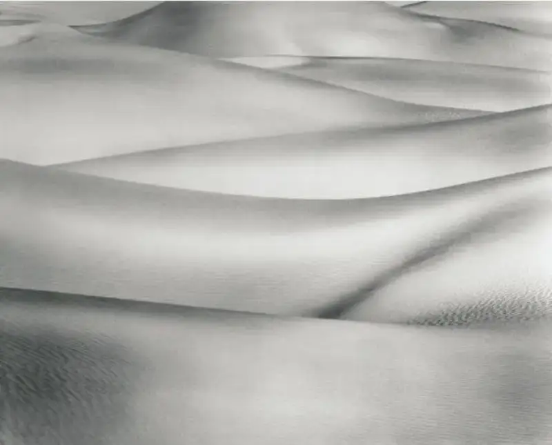
Deep and shallow
Blurred and sharp, light and heavy
Sparse and dense, long and short
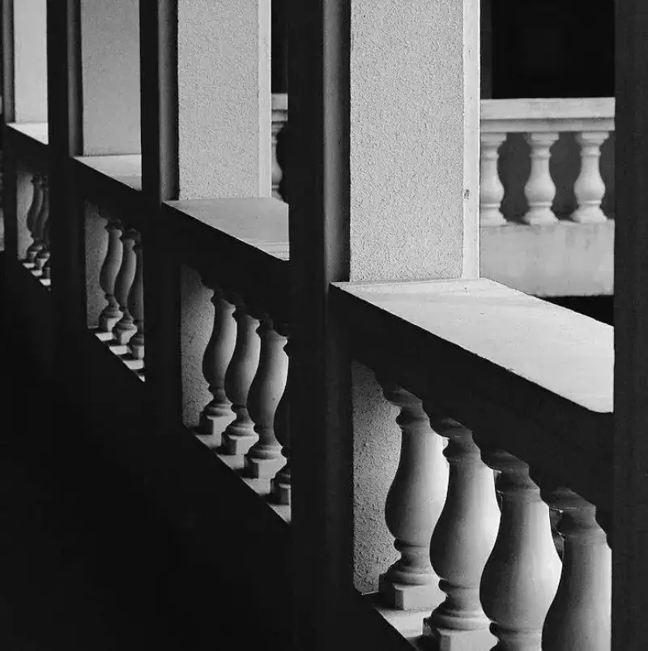
Bright and dark, black and white
Use geometric patterns: when things repeat, they turn into abstract patterns. You no longer see a single object. You see shapes, lines, and blocks of color.
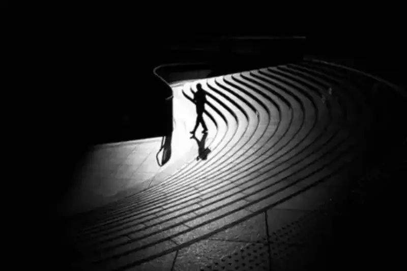
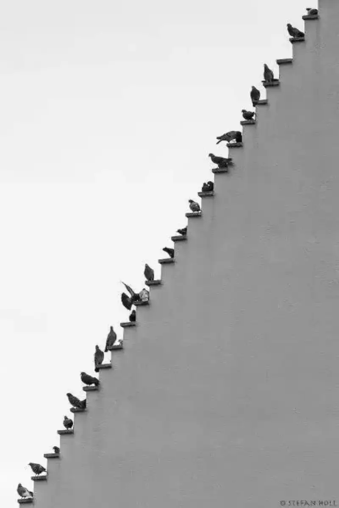
Find change within the pattern: a frame that is only formal can feel flat. Add some change, and the eye has a focal point, so the frame feels more alive.
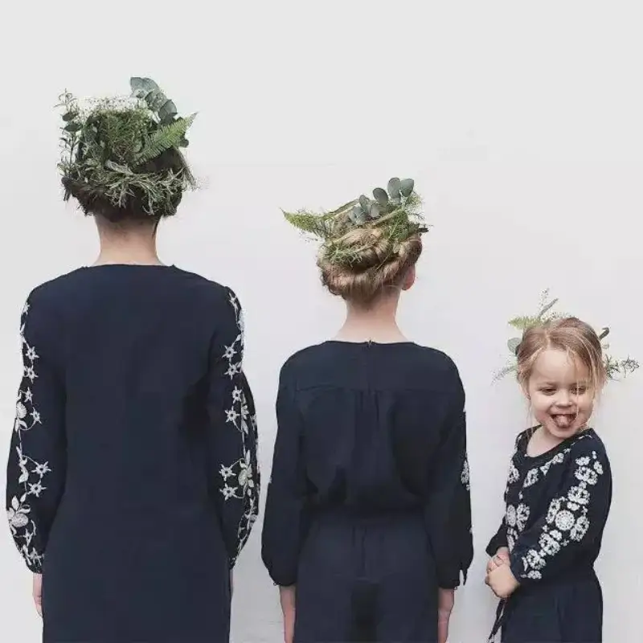
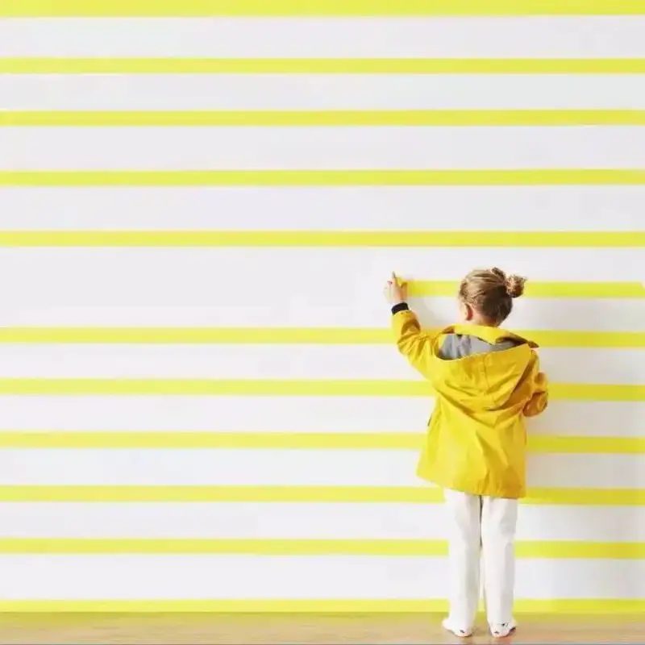
Gear and angle:
A telephoto lens compresses the frame, packs the lines of objects closer together, and strengthens the sense of form.
A wide-angle lens takes in a wide view. Shooting from above or below makes lines converge and gives a depth of near-large, far-small.
When you watch life closely through your lens, you will find that you can shoot this kind of rhythmic beauty too. The pattern of a rug, the pattern of wallpaper, rows of books, parked bicycles. Do not believe it? Just try.